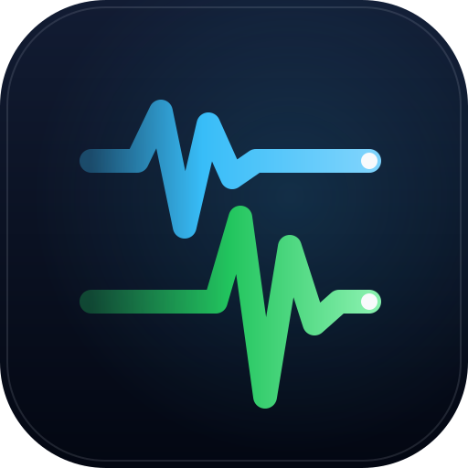

Lightweight AEAS Earthquake Alert Receiver • Emulator-Free
Autonomous Python client (0 external dependencies) connecting directly to the MCS push protocol to deliver low-latency earthquake alerts to Home Assistant in milliseconds.
Run this 1-line command in your terminal. It executes in a temporary session without cloning or installing dependencies. As soon as it runs, this web page automatically connects in real time: